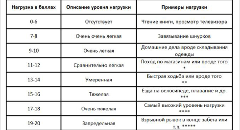

Today we will concentrate on identifying the exertion during a training session. First of all, we will speak about the internal characteristics of the exertion (sensations and heart rate) and then about the external characteristics (session intensity and training amount). We believe that it is important to understand so that when the program is over, the trainees could be successful in designing their own training programs.
Generally speaking, exertion is a comprehensive indicator which considers such factors, as the number of sets and repetitions, the number of exercises on one muscle group, repetition rate, relaxation time between the sets, etc.
Internal characteristics of exertion
Borg scale
One possible method to measure the exertion is to use the Borg scale of perceived exertion. It is based on individual perception which a person experiences during exertion.
The Borg scale ranges from 0 (no exertion) to 20 (maximal, nearly overexertion), this scale is for adults younger than 65:

You should evaluate your condition from many sides and measure the overall exertion rather than separate factors (for example, shortness of breath or pain in the muscles).
As for the complexity in doing circuits in our program, here in terms of a modified scale the exertion should be ranged 13 – 16, that is, it should be hard, but not very hard. If it is hard for you to do the circuits every day, then the progress will be slower than expected, but if it is too hard, then you can’t recover in 24 hours and have workout sessions every day.
There are also more scientific, physiological, methods to identify the exertion. This can be done directly by measuring the rate of oxygen consumption (l/min) which can be divided into an absolute or relative percentage from maximum oxygen consumption. But since not everyone has an opportunity to use this method, then one can use indirect methods based on the correlations between the exertion and some physiological indicators.
Probably, the most convenient indicator is the heart rate. Heart rate based measurement of workout exertion grounds on the idea that the more exertion is, the higher heart rate is.
You can easily find several different formulas to calculate the optimal heart rate for different activities in the Internet, but, unfortunately, we didn’t have opportunity to examine this issue, therefore we will give you the information as it is.
For men (Tanaka formula):
Maximum allowable pulse rate: 208 – 0.7* [Age]
For women (Martha Gulati formula):
Maximum allowable pulse rate: 206 – 0.88* [Age] (max heart rate)
Now meet the heroes of the day – intensity and training volume
Intensity - is a multi-faceted factor which shows how hard it is for you to do a particular exercise, and it depends on such factors as strength which the targeted muscles should resist, rate of repetition execution, specific position of the body during the exercise, etc.
To calculate the intensity of your training, you should, first of all, find out your maximums in the exercises. If you train with your own bodyweight, then you should know the maximum number of repetitions which could be done with the perfect technique. If you train with additional weight, you should know the maximum weight which can be used for one repetition with the perfect technique.
Training volume - is the number of repetitions done in particular exercises and during the whole session. Therefore, if you do 100 pull-ups within one session, and 150 pull-ups in the next session, then the amount of training for the second workout session increases.
It should be noticed that intensity and amount have a reverse dependence, that is, one parameter grows, while the second inevitably falls down. It is clear that you can’t do the same number of sets and repetitions with 90-100% intensity in comparison with 50% intensity.
Here is a question – what parameter is more important? What parameter should be paid more attention to during the sessions? The point is that this question is initially wrong! Intensity and amount of training are two characteristics which can help you to compare your sessions with each other and to evaluate your progress. As usual, everything depends on your goals.
However, you should remember that the session should differ ONLY by 1 exertion parameter to compare two sessions in an appropriate way. You can clearly understand which session is harder. If 2 and more parameters are changed at the same time (especially, is the parameters are different, for example, relaxation time and the number of sets) within one cycle, then it could be practically impossible to measure the dynamics of exertion.
Let’s consider the following examples.
Fixed parameters: relaxation time, technique, number of sets, weight.
Changeable parameters: number of repetitions.
Explanations with asterisks:
* Exertion requires physical efforts, but does not result in hard breathing and higher heart rate.
** Exertion requires some physical efforts and gives hard breathing and higher heart rate, but over time you won’t have shortness of breath.
*** Exertion requires significant physical efforts and greatly increases breathing and heart rates.
**** The highest exertion which you can stand for a long time.
***** Exertion at the end of tether which you can stand only for a short time.
** Exertion requires some physical efforts and gives hard breathing and higher heart rate, but over time you won’t have shortness of breath.
*** Exertion requires significant physical efforts and greatly increases breathing and heart rates.
**** The highest exertion which you can stand for a long time.
***** Exertion at the end of tether which you can stand only for a short time.
You should evaluate your condition from many sides and measure the overall exertion rather than separate factors (for example, shortness of breath or pain in the muscles).
As for the complexity in doing circuits in our program, here in terms of a modified scale the exertion should be ranged 13 – 16, that is, it should be hard, but not very hard. If it is hard for you to do the circuits every day, then the progress will be slower than expected, but if it is too hard, then you can’t recover in 24 hours and have workout sessions every day.
Calculation of the optimal pulse rate
There are also more scientific, physiological, methods to identify the exertion. This can be done directly by measuring the rate of oxygen consumption (l/min) which can be divided into an absolute or relative percentage from maximum oxygen consumption. But since not everyone has an opportunity to use this method, then one can use indirect methods based on the correlations between the exertion and some physiological indicators.
Probably, the most convenient indicator is the heart rate. Heart rate based measurement of workout exertion grounds on the idea that the more exertion is, the higher heart rate is.
You can easily find several different formulas to calculate the optimal heart rate for different activities in the Internet, but, unfortunately, we didn’t have opportunity to examine this issue, therefore we will give you the information as it is.
IMPORTANT NOTE:
Please be aware that ALL formulas for pulse rate calculation are rough estimations FOR STATISTICS. People are different, and the difference in maximum pulse rate for different people of one age group could reach 50 and more (210 and 160, for example). You MUST NOT use the formulas in your training process. This is both science and personal experience. Learn from other people’s mistakes.
For men (Tanaka formula):
Maximum allowable pulse rate: 208 – 0.7* [Age]
For women (Martha Gulati formula):
Maximum allowable pulse rate: 206 – 0.88* [Age] (max heart rate)
External characteristics of exertion
Now meet the heroes of the day – intensity and training volume
Intensity - is a multi-faceted factor which shows how hard it is for you to do a particular exercise, and it depends on such factors as strength which the targeted muscles should resist, rate of repetition execution, specific position of the body during the exercise, etc.
To calculate the intensity of your training, you should, first of all, find out your maximums in the exercises. If you train with your own bodyweight, then you should know the maximum number of repetitions which could be done with the perfect technique. If you train with additional weight, you should know the maximum weight which can be used for one repetition with the perfect technique.
Training volume - is the number of repetitions done in particular exercises and during the whole session. Therefore, if you do 100 pull-ups within one session, and 150 pull-ups in the next session, then the amount of training for the second workout session increases.
It should be noticed that intensity and amount have a reverse dependence, that is, one parameter grows, while the second inevitably falls down. It is clear that you can’t do the same number of sets and repetitions with 90-100% intensity in comparison with 50% intensity.
Here is a question – what parameter is more important? What parameter should be paid more attention to during the sessions? The point is that this question is initially wrong! Intensity and amount of training are two characteristics which can help you to compare your sessions with each other and to evaluate your progress. As usual, everything depends on your goals.
However, you should remember that the session should differ ONLY by 1 exertion parameter to compare two sessions in an appropriate way. You can clearly understand which session is harder. If 2 and more parameters are changed at the same time (especially, is the parameters are different, for example, relaxation time and the number of sets) within one cycle, then it could be practically impossible to measure the dynamics of exertion.
Let’s consider the following examples.
Scenario А
Fixed parameters: relaxation time, technique, number of sets, weight.
Changeable parameters: number of repetitions.
Training session №1:
Pull-ups, 5 sets of 10 reps.
Training session №2:
Pull-ups, 5 sets of 15 reps.
It is evident that the second session is harder. But if you increase the number of reps and the relaxation time between the sets, then you can’t say for sure which session is harder. Therefore, it is not reasonable to change several parameters at a time.
Scenario B
Fixed parameters: technique, number of sets, number of reps, weight.
Changeable parameters: rest time.
Training Session №1:
Pull-ups, 5 sets of 10 reps with 3 minute relaxation interval
Training Session №2:
Pull-ups, 5 sets of 10 reps with 2 minute relaxation interval.
In the next session you can change the parameter which was fixed before. For example, the number of sets. And relaxation time can become a fixed parameter.
A change in only 1 parameter in a session to make it harder gives you a very steady increase of the exertion. This makes you progress when even adding one rep can be a huge leap in exertion for a body.
Our 100 Days Workout program is developed, first of all, for the beginners, therefore, we base our sessions on moderate-intensive training and a huge amount of training. Our goal is to teach the trainees the right techniques, to work out the movement skills to do the exercises and to train cardio-vascular and other systems of the body. At the same time, we also consider the idea of daily sessions. All these factors determine our approach to intensity and to amount of training.